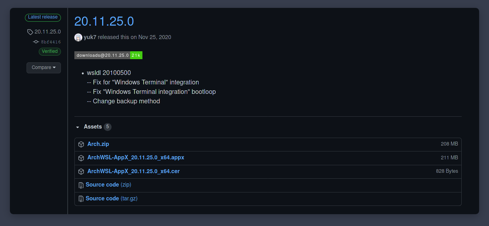

Hoy vamos a aprender, juntos, a instalar Archlinux dentro de Windows, aprovechando la herramienta del subsistema de linux.
Intro
Para estas instancias del tutorial, ya deberías haber instalado WSL2. Si aún no lo has hecho te recomiendo que veas nuestro post anterior.
Instalando Arch en WSL2

Si seguiste todo al pie de la letra, no debería tener mayores complicaciones instalar Arch dentro de windows.
- Descargamos lo necesario
desde aquí

- En el link vamos a encontrar tres archivos diferentes. Uno es un
.Appx, otro es un.cery un.zip. Solo vamos a necesitar el .appx y .cer - Una vez hayamos descargado debemos instalar el archivo
.cerde manera manual.


- Luego de haber instalado el certificado correctamente, vamos a instalar el
.appx. Una forma sencilla de hacerlo es con doble click e instalan. Pero en caso de que (como yo) tengan algún inconveniente de instalar corren este comando en la shell, y se les instala sin problemas. (Recuerden que para tirar el comando deben abrir powershell en la carpeta donde tienen descargado el.appx)
|
|
HRESULT:0x80370102.
Abrimos powershell (siempre como administrador) y ejecutamos bcdedit /set hypervisorlaunchtype auto start y reiniciamosConfigurando Arch
Sí todo salió bien luego de la instalación les aparecerá el ícono de Arch para poder correr el subsistema. Entonces corriendo arch, vamos a ejecutar estos comandos para poder configurarlo.
- Configuramos el Usuario y Contraseña
|
|
Y cierras.
- Abres nuevamente la powershell (como administrador) y escribes:
|
|
Configurando arch desde dentro
Bien, ya tienes configurado arch para poder utilizarlo, pero debemos configurar arch para que pueda ser usado tal y como es
- Iniciamos los keyrings (necesario para poder correr pacman)
|
|
- Actualizamos pacman e instalamos algunas utilidades.
|
|
- Habilitamos multilib
|
|
|
|
- Actualizamos los mirrors con reflector
|
|
Instalamos yay
|
|
Listo!
Ahora con Arch instalado dentro de windows, podremos hacer cuanto quisieramos. Luego más adelante realizaré otro tutorial, enseñando a instalar ohmyzsh y algunos plugins interesantes para esta hermosa herramienta.